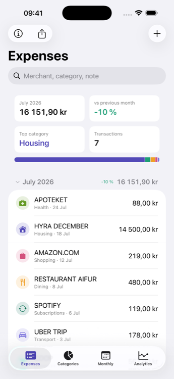
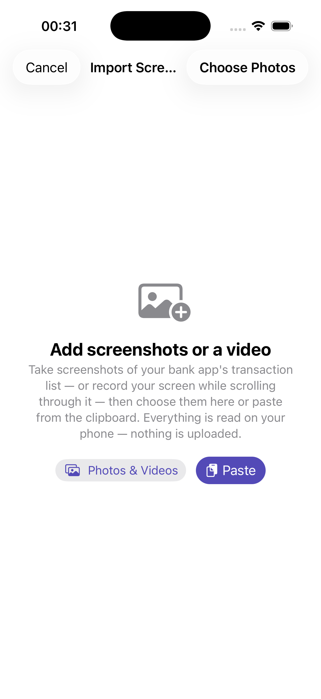
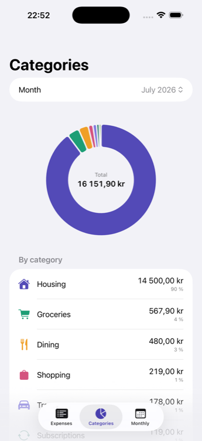
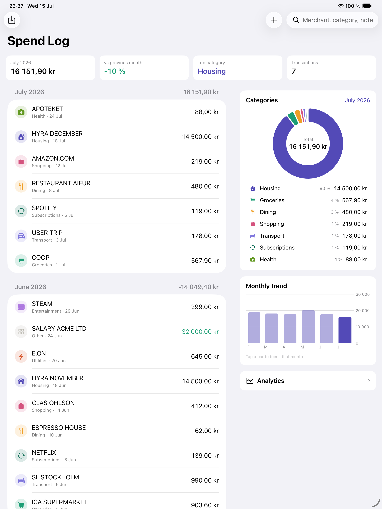
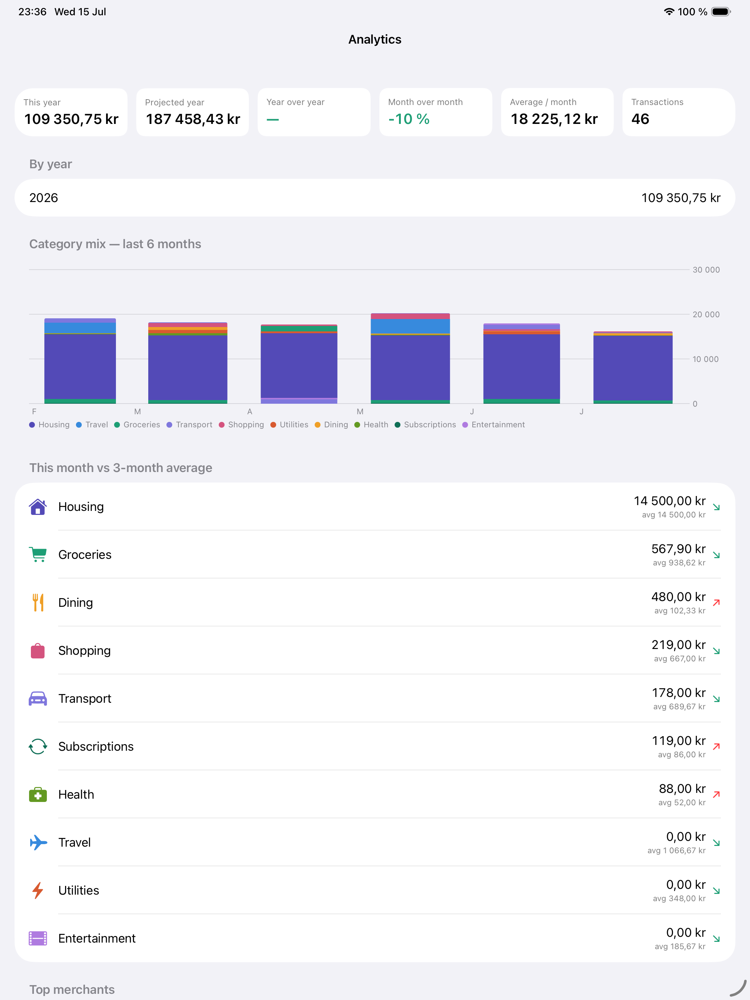

A simple, private expense tracker that works entirely on your device — no account, no cloud, no ads.



Spendly Log focuses on the essentials — logging expenses, understanding where they go, and tracking trends over time.
Add an expense in seconds — merchant-based heuristics suggest the right category automatically.
A donut chart shows exactly where your money went each month, across 12 built-in categories.
A 12-month bar chart with month-over-month deltas so you can spot patterns before they add up.
Auto-detects bank and card export formats — delimiters, date formats, US/EU numbers, debit/credit columns.
No CSV export? Screenshot your bank app's transaction list and the app reads it with on-device text recognition — dates, merchants, and amounts, reviewed by you before saving.
Long list? Record your screen while scrolling through it and import the whole recording — frames are read on your device and duplicates removed automatically.
Cryptic statement descriptors become readable store names — "STORA COOP SUNDBY PARK" is just "Stora Coop".
Re-importing the same file, screenshot, or video never creates duplicates — each row is hashed and checked automatically.
Year-to-date, projections, year-over-year and month-over-month trends, top merchants, and per-category deep dives.
On iPad, everything lives on one screen — your expenses, category donut, and monthly trend side by side. Tap a month to focus it, tap a category to filter, and dive into full analytics.


Everything is stored locally on your device using Apple's on-device storage. Spendly Log makes zero network requests — no account, no analytics, no tracking, and nothing is ever uploaded anywhere.